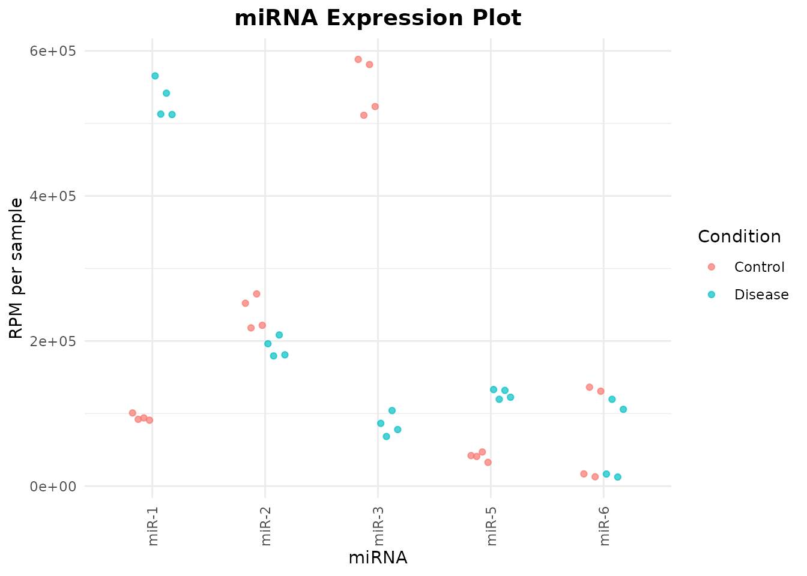
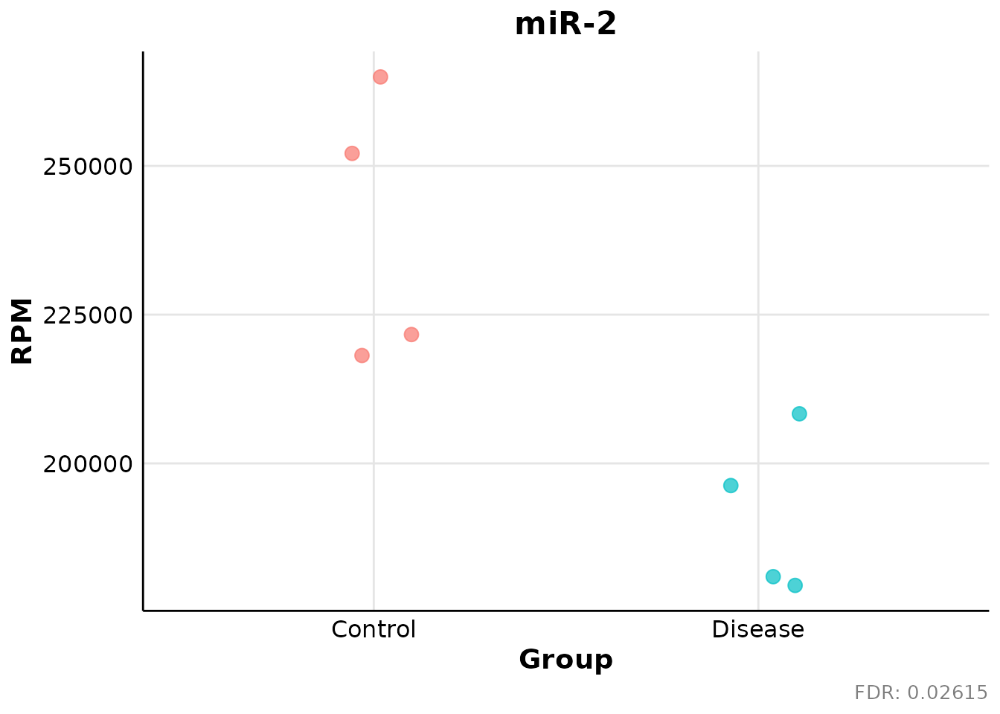

Overview
miRPM provides a transparent workflow for exploratory
analysis of miRNA-seq count matrices using reads per million (RPM)
normalization.
The workflow includes:
- RPM normalization.
- Abundance and prevalence filtering.
- Nonparametric group comparisons.
- Static and interactive expression plots.
RPM is an abundance-scaling method. It does not replace count-based differential-expression models such as DESeq2, edgeR, or limma-voom when modelling complex experimental designs, composition bias, or count-dependent variance is required.
Load the package and example data
library(miRPM)
data("miRPM_example", package = "miRPM")
counts <- miRPM_example$counts
metadata <- miRPM_example$metadataThe example dataset is synthetic and is intended only for documentation and testing.
dim(counts)
#> [1] 6 8
head(counts)
#> S1 S2 S3 S4 S5 S6 S7 S8
#> miR-1 120 135 110 125 850 900 780 920
#> miR-2 300 320 310 305 295 315 300 325
#> miR-3 700 750 680 720 130 120 150 140
#> miR-4 0 2 0 1 3 0 2 1
#> miR-5 50 60 55 45 200 210 190 220
#> miR-6 20 200 15 180 25 210 18 190
metadata
#> Sample Condition
#> 1 S1 Control
#> 2 S2 Control
#> 3 S3 Control
#> 4 S4 Control
#> 5 S5 Disease
#> 6 S6 Disease
#> 7 S7 Disease
#> 8 S8 DiseaseThe count matrix must contain miRNAs in rows and samples in columns.
Normalize counts to RPM
By default, normalize_rpm() calculates each library size
from the complete column sum of the input count matrix.
rpm <- normalize_rpm(counts)
dim(rpm)
#> [1] 6 8
round(rpm[, 1:4], 2)
#> S1 S2 S3 S4
#> miR-1 100840.34 92024.54 94017.09 90843.02
#> miR-2 252100.84 218132.24 264957.26 221656.98
#> miR-3 588235.29 511247.44 581196.58 523255.81
#> miR-4 0.00 1363.33 0.00 726.74
#> miR-5 42016.81 40899.80 47008.55 32703.49
#> miR-6 16806.72 136332.65 12820.51 130813.95The returned matrix contains normalization metadata.
attr(rpm, "miRPM_normalization")
#> $method
#> [1] "RPM"
#>
#> $scale
#> [1] 1e+06
#>
#> $library_sizes
#> S1 S2 S3 S4 S5 S6 S7 S8
#> 1190 1467 1170 1376 1503 1755 1440 1796
#>
#> $reads_per_rpm
#> S1 S2 S3 S4 S5 S6 S7 S8
#> 0.001190 0.001467 0.001170 0.001376 0.001503 0.001755 0.001440 0.001796
#>
#> $library_size_source
#> [1] "matrix_column_sums"
#>
#> $input_features
#> [1] 6
#>
#> $input_samples
#> [1] 8Externally calculated library sizes can also be supplied as a named vector.
library_sizes <- setNames(
c(
2.1e6, 2.3e6, 2.0e6, 2.2e6,
1.9e6, 2.4e6, 2.1e6, 2.0e6
),
colnames(counts)
)
rpm_external <- normalize_rpm(
count_matrix = counts,
library_sizes = library_sizes
)
dim(rpm_external)
#> [1] 6 8Filter low-information miRNAs
Filtering can combine:
- Minimum RPM abundance.
- Minimum raw count.
- Minimum prevalence.
- Minimum number of qualifying samples.
- Group-specific prevalence requirements.
The following example retains miRNAs satisfying the criteria in at least one experimental group.
filtered <- filter_mirnas(
rpm_matrix = rpm,
metadata = metadata,
raw_counts = counts,
min_rpm = 5,
min_count = 10,
min_prevalence = 0.5,
min_samples = 2,
group_column = "Condition",
prevalence_scope = "any_group",
return_diagnostics = TRUE
)
filtered$summary
#> $input_mirnas
#> [1] 6
#>
#> $retained_mirnas
#> [1] 5
#>
#> $removed_mirnas
#> [1] 1
#>
#> $retained_fraction
#> [1] 0.8333333
#>
#> $min_rpm
#> [1] 5
#>
#> $min_count
#> [1] 10
#>
#> $min_prevalence
#> [1] 0.5
#>
#> $min_samples
#> [1] 2
#>
#> $prevalence_scope
#> [1] "any_group"
#>
#> $min_groups
#> [1] 1
#>
#> $number_of_groups
#> [1] 2
#>
#> $count_requirement_source
#> [1] "raw_counts"
#>
#> $rpm_threshold_read_equivalents
#> S1 S2 S3 S4 S5 S6 S7 S8
#> 0.005950 0.007335 0.005850 0.006880 0.007515 0.008775 0.007200 0.008980
#>
#> $legacy_interface
#> [1] FALSEThe filtered RPM matrix is available in
filtered$filtered_matrix.
rownames(filtered$filtered_matrix)
#> [1] "miR-1" "miR-2" "miR-3" "miR-5" "miR-6"
dim(filtered$filtered_matrix)
#> [1] 5 8Detailed filtering information is available for each miRNA.
filtered$diagnostics
#> miRNA mean_rpm median_rpm maximum_rpm overall_detected_samples
#> 1 miR-1 313749.6514 306544.8897 565535.595 8
#> 2 miR-2 215237.4550 213232.7880 264957.265 8
#> 3 miR-3 317615.3187 307707.0552 588235.294 8
#> 4 miR-4 753.9701 641.7685 1996.008 0
#> 5 miR-5 83724.1041 83333.3333 133067.199 8
#> 6 miR-6 68919.5008 61298.6843 136332.652 8
#> overall_prevalence groups_passing passes_filter
#> 1 1 2 TRUE
#> 2 1 2 TRUE
#> 3 1 2 TRUE
#> 4 0 0 FALSE
#> 5 1 2 TRUE
#> 6 1 2 TRUE
#> reason group_size_Control
#> 1 retained 4
#> 2 retained 4
#> 3 retained 4
#> 4 below_abundance_or_prevalence_requirement 4
#> 5 retained 4
#> 6 retained 4
#> required_samples_Control detected_samples_Control prevalence_Control
#> 1 2 4 1
#> 2 2 4 1
#> 3 2 4 1
#> 4 2 0 0
#> 5 2 4 1
#> 6 2 4 1
#> passes_Control group_size_Disease required_samples_Disease
#> 1 TRUE 4 2
#> 2 TRUE 4 2
#> 3 TRUE 4 2
#> 4 FALSE 4 2
#> 5 TRUE 4 2
#> 6 TRUE 4 2
#> detected_samples_Disease prevalence_Disease passes_Disease
#> 1 4 1 TRUE
#> 2 4 1 TRUE
#> 3 4 1 TRUE
#> 4 0 0 FALSE
#> 5 4 1 TRUE
#> 6 4 1 TRUEFiltering thresholds should be chosen according to sequencing depth, sample size, biological context, and the intended downstream analysis. They should not be interpreted as universal detection thresholds.
Perform nonparametric group comparisons
perform_statistical_tests() analyzes the filtered RPM
matrix using nonparametric methods.
For two independent groups, the function performs a Wilcoxon rank-sum test. For more than two groups, it performs a Kruskal-Wallis test and can calculate Dunn post-hoc comparisons.
de_result <- perform_statistical_tests(
miRNA_ftd = filtered$filtered_matrix,
metadata = metadata,
condition = "Condition",
group_order = c("Control", "Disease"),
output_file = NULL,
assign_results = FALSE,
write_excel = FALSE
)The complete result table includes raw and adjusted p-values together with descriptive and effect-size information.
de_result$results
#> miRNA group_1 group_2 wilcox_statistic mann_whitney_u_group_1 p_value
#> 1 miR-2 Control Disease 16 16 0.02092134
#> 2 miR-3 Control Disease 16 16 0.02092134
#> 3 miR-1 Control Disease 0 0 0.02092134
#> 4 miR-5 Control Disease 0 0 0.02092134
#> 5 miR-6 Control Disease 11 11 0.38647623
#> rank_biserial_group_1_vs_group_2 probability_group_1_greater_group_2
#> 1 1.000 1.0000
#> 2 1.000 1.0000
#> 3 -1.000 0.0000
#> 4 -1.000 0.0000
#> 5 0.375 0.6875
#> median_difference_group_1_minus_group_2 mean_difference_group_1_minus_group_2
#> 1 48263.01 47948.75
#> 2 470003.86 466736.93
#> 3 -434222.77 -438636.81
#> 4 -85761.14 -86133.89
#> 5 12598.32 10547.92
#> log2_median_ratio_group_1_vs_group_2 FDR p_significance
#> 1 0.3286969 0.02615167 *
#> 2 2.7476420 0.02615167 *
#> 3 -2.5028314 0.02615167 *
#> 4 -1.6175628 0.02615167 *
#> 5 0.2700038 0.38647623
#> FDR_significance overall_mean overall_median overall_iqr overall_mad
#> 1 * 215237.5 213232.79 36822.93 36497.00
#> 2 * 317615.3 307707.06 453383.00 334303.64
#> 3 * 313749.7 306544.89 426513.10 316570.79
#> 4 * 83724.1 83333.33 83119.38 62083.92
#> 5 68919.5 61298.68 106766.90 72111.33
#> overall_minimum overall_maximum overall_detected_samples overall_prevalence
#> 1 179487.18 264957.3 8 1
#> 2 68376.07 588235.3 8 1
#> 3 90843.02 565535.6 8 1
#> 4 32703.49 133067.2 8 1
#> 5 12500.00 136332.7 8 1
#> overall_zero_fraction n_Control mean_Control median_Control iqr_Control
#> 1 0 4 239211.83 236878.91 34539.153
#> 2 0 4 550983.78 552226.20 62702.538
#> 3 0 4 94431.25 93020.82 3993.744
#> 4 0 4 40657.16 41458.30 4414.023
#> 5 0 4 74193.46 73810.34 116383.458
#> mad_Control minimum_Control maximum_Control detected_samples_Control
#> 1 25180.921 218132.24 264957.26 4
#> 2 48169.289 511247.44 588235.29 4
#> 3 2352.939 90843.02 100840.34 4
#> 4 4528.417 32703.49 47008.55 4
#> 5 87468.538 12820.51 136332.65 4
#> prevalence_Control zero_fraction_Control n_Disease mean_Disease
#> 1 1 0 4 191263.08
#> 2 1 0 4 84246.85
#> 3 1 0 4 533068.05
#> 4 1 0 4 126791.05
#> 5 1 0 4 63645.54
#> median_Disease iqr_Disease mad_Disease minimum_Disease maximum_Disease
#> 1 188615.90 18698.86 12444.158 179487.18 208333.3
#> 2 82222.34 15354.66 13430.585 68376.07 104166.7
#> 3 527243.59 34956.15 21806.988 512249.44 565535.6
#> 4 127219.44 10439.78 7837.592 119658.12 133067.2
#> 5 61212.02 93657.46 69156.356 12500.00 119658.1
#> detected_samples_Disease prevalence_Disease zero_fraction_Disease
#> 1 4 1 0
#> 2 4 1 0
#> 3 4 1 0
#> 4 4 1 0
#> 5 4 1 0Results passing the selected significance threshold are stored separately.
de_result$significant_results
#> miRNA group_1 group_2 wilcox_statistic mann_whitney_u_group_1 p_value
#> 1 miR-2 Control Disease 16 16 0.02092134
#> 2 miR-3 Control Disease 16 16 0.02092134
#> 3 miR-1 Control Disease 0 0 0.02092134
#> 4 miR-5 Control Disease 0 0 0.02092134
#> rank_biserial_group_1_vs_group_2 probability_group_1_greater_group_2
#> 1 1 1
#> 2 1 1
#> 3 -1 0
#> 4 -1 0
#> median_difference_group_1_minus_group_2 mean_difference_group_1_minus_group_2
#> 1 48263.01 47948.75
#> 2 470003.86 466736.93
#> 3 -434222.77 -438636.81
#> 4 -85761.14 -86133.89
#> log2_median_ratio_group_1_vs_group_2 FDR p_significance
#> 1 0.3286969 0.02615167 *
#> 2 2.7476420 0.02615167 *
#> 3 -2.5028314 0.02615167 *
#> 4 -1.6175628 0.02615167 *
#> FDR_significance overall_mean overall_median overall_iqr overall_mad
#> 1 * 215237.5 213232.79 36822.93 36497.00
#> 2 * 317615.3 307707.06 453383.00 334303.64
#> 3 * 313749.7 306544.89 426513.10 316570.79
#> 4 * 83724.1 83333.33 83119.38 62083.92
#> overall_minimum overall_maximum overall_detected_samples overall_prevalence
#> 1 179487.18 264957.3 8 1
#> 2 68376.07 588235.3 8 1
#> 3 90843.02 565535.6 8 1
#> 4 32703.49 133067.2 8 1
#> overall_zero_fraction n_Control mean_Control median_Control iqr_Control
#> 1 0 4 239211.83 236878.91 34539.153
#> 2 0 4 550983.78 552226.20 62702.538
#> 3 0 4 94431.25 93020.82 3993.744
#> 4 0 4 40657.16 41458.30 4414.023
#> mad_Control minimum_Control maximum_Control detected_samples_Control
#> 1 25180.921 218132.24 264957.26 4
#> 2 48169.289 511247.44 588235.29 4
#> 3 2352.939 90843.02 100840.34 4
#> 4 4528.417 32703.49 47008.55 4
#> prevalence_Control zero_fraction_Control n_Disease mean_Disease
#> 1 1 0 4 191263.08
#> 2 1 0 4 84246.85
#> 3 1 0 4 533068.05
#> 4 1 0 4 126791.05
#> median_Disease iqr_Disease mad_Disease minimum_Disease maximum_Disease
#> 1 188615.90 18698.86 12444.158 179487.18 208333.3
#> 2 82222.34 15354.66 13430.585 68376.07 104166.7
#> 3 527243.59 34956.15 21806.988 512249.44 565535.6
#> 4 127219.44 10439.78 7837.592 119658.12 133067.2
#> detected_samples_Disease prevalence_Disease zero_fraction_Disease
#> 1 4 1 0
#> 2 4 1 0
#> 3 4 1 0
#> 4 4 1 0Adjusted p-values control the false discovery rate across the tested miRNAs. Statistical significance should be interpreted together with effect size, abundance, prevalence, consistency, and study design.
Create a joint expression plot
miRNA_expression_plot() returns both a static
ggplot2 object and an interactive plotly
object.
joint_plot <- miRNA_expression_plot(
mirnas = rownames(filtered$filtered_matrix),
rpm_matrix = filtered$filtered_matrix,
metadata = metadata,
condition_column = "Condition",
sample_column = "Sample",
groups = c("Control", "Disease"),
save_html = FALSE
)
joint_plot$ggplot
The interactive object is available as:
class(joint_plot$interactive)
#> [1] "plotly" "htmlwidget"It can be displayed interactively in an RStudio viewer, R Markdown document, or compatible HTML environment.
Create individual miRNA plots
individual_miRNA_plot() creates one static plot for each
selected miRNA.
individual_plots <- individual_miRNA_plot(
filtered_results = de_result$results,
rpm_matrix = filtered$filtered_matrix,
metadata = metadata,
condition_column = "Condition",
sample_column = "Sample",
groups_to_include = c("Control", "Disease"),
adjusted_pvalue_column = "FDR",
save_png = FALSE
)
length(individual_plots$plots)
#> [1] 5Display the first plot:
individual_plots$plots[[1]]
The returned object also reports selected miRNAs, missing miRNAs, adjusted p-values, data used for plotting, and any files written to disk.
names(individual_plots)
#> [1] "plots" "files" "data" "selected_mirnas"
#> [5] "missing_mirnas" "groups" "adjusted_pvalues" "output_folder"
individual_plots$adjusted_pvalues
#> miR-2 miR-3 miR-1 miR-5 miR-6
#> 0.02615167 0.02615167 0.02615167 0.02615167 0.38647623Reproducible workflow summary
A typical miRPM analysis follows this order:
rpm <- normalize_rpm(counts)
filtered <- filter_mirnas(
rpm_matrix = rpm,
metadata = metadata,
raw_counts = counts,
group_column = "Condition",
prevalence_scope = "any_group",
return_diagnostics = TRUE
)
results <- perform_statistical_tests(
miRNA_ftd = filtered$filtered_matrix,
metadata = metadata,
condition = "Condition",
assign_results = FALSE,
write_excel = FALSE
)Normalization should be performed before filtering so that library sizes are calculated from the complete count matrix unless valid external library sizes are supplied.